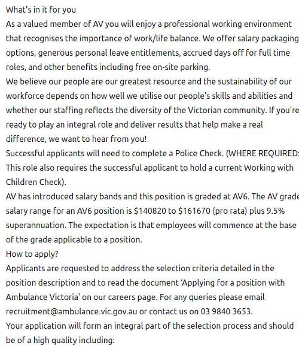
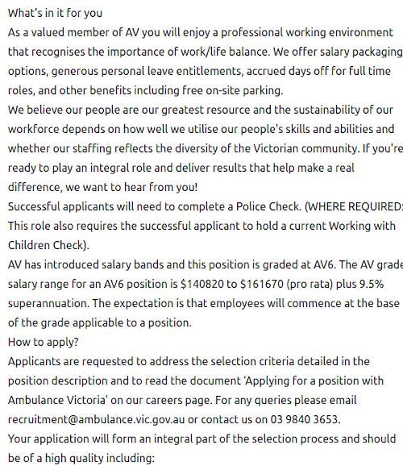

Ideal Job - Data Scientist
 

 The position of data scientist with Victorian Ambulance is a role of using information technology to extract meaning from large data sets that they have accumulated. This type of work is appealing, as it combines a lot of things I am interested in into one job: programming, data analysis and large data sets. It also relates to my current job role and experience in manipulating and packaging contact centre performance data
The position of data scientist with Victorian Ambulance is a role of using information technology to extract meaning from large data sets that they have accumulated. This type of work is appealing, as it combines a lot of things I am interested in into one job: programming, data analysis and large data sets. It also relates to my current job role and experience in manipulating and packaging contact centre performance data
Skills Required
- Statistics knowledge
- Leadership and communication skills
- Python
- R
- SQL
Qualifications
No specific qualifications are mentioned, but based on the breadth of knowledge required, a qualification encompassing computer science, information technology, statistics or maths would be required along with the possible need of a further advanced qualification in data science.
Experience
- Leadership of small or medium teams involving similar work to the position above.
- Working with large data sets with firm knowledge of statistics.
- Building and deploying statistical models.
- Using the information gathered to put forth recommendations.
My Current Skills
- Basic statistics knowledge from my degree in Psychology, however not to the requirements of this position.
- Solid foundation in programming that would allow me to learn Python and R quite easily.
- Leadership and communication skills
My Current Qualifications
- BSci in Psychology, which has some statistics training.
- Cert III in Ambulance Communications. While not directly related, it gives me insight into the requirements and interests of an ambulance organisation.
My Current Experience
- Current leadership experience involved acting up as the Senior Coordinator for Control Centre Deployments for NSW Ambulance for a month. I led a small team in configuring and using Genesys Workforce Management to implement forecasting and scheduling for the calltakers of NSW Ambulance. While the forecasting is already built into the software, it often required the dumping and manipulation of data into Excel or using basic Splunk searches to assist in making decisions on how best to fit the software’s capabilities within the organisation.
- Also, due to my technical knowledge, I am frequently the lead below the current Senior Coordinator in coming up with solutions about how best to use the program to efficiently deploy our calltakers.
- All of this requires the use of a large amount of historical data related to calltaking. However, most of the analysis used is primarily basic statistics.
- Using this software and data analysis skills in my current role as a real time analyst, I frequently put forth recommendations on forecasting and deployment of our calltakers.
My Plan
To obtain the skills necessary for this position, likely means continuing with studies in information technology and maths. While I feel I have a solid programming background, it is mainly theoretical in nature, and I have not done anything large and complicated. In my current degree path, I need to lay further foundation in programming and software design. This will enable me to learn Python and R through self-study. Also through the degree path, I can learn more about databases and using SQL to manipulate and extract data from databases.
Increasing my knowledge of statistics will likely require graduate study, as I do not have the advanced grounding in statistics required in this position. This would be best acquired through a master’s degree in either statistics or data science.
Once I have the required knowledge, I would need to find a place in the industry in the form of a junior role, that would allow me to gain further experience using large data sets and statistics along with building and deploying statistical models. My current experience along with further education may assist me in obtaining a more junior role.